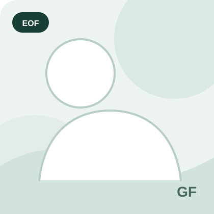
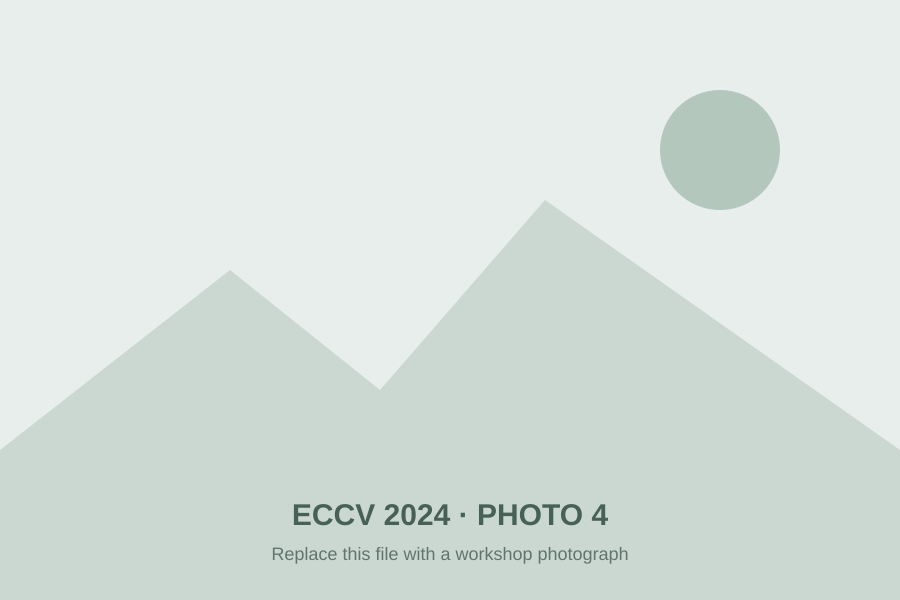

Invited speaker
Jakob Engel
Meta Reality Labs
Spatial AI for Contextual AI.
1st edition · ECCV 2024
Integrating Computer Vision in Smart Eyewear (ICVSE)
The first workshop in the series established a dedicated forum for smart-eyewear computer vision, connecting algorithmic advances with computation, energy, privacy and usability constraints.
Half-day workshop
Invited talks were interleaved with speed poster presentations and a one-hour poster and networking session.
Invited talks
The program covered spatial AI, egocentric vision, hardware-aware tinyML, visual attention and gaze guidance in extended reality.
Meta Reality Labs
Spatial AI for Contextual AI.

University of Catania
Procedure Understanding from Egocentric Videos.
Fondazione Bruno Kessler
Hardware-Aware Scaling in tinyML.
The University of Tokyo
Understanding Egocentric Visual Attention and Actions.
Technical University of Munich
Imperceptible Gaze Guidance in Extended Reality.
Recognition
The workshop call announced awards for the three strongest submissions.
The awards were based on novelty, impact and research quality, and were presented during the workshop closing session.
Workshop contributions
Twelve papers spanning eye tracking, event-based sensing, visual-inertial SLAM, efficient transformers, pose estimation and egocentric action recognition.
Organizing committee
The first edition was organized by members of the Smart Eyewear Lab from EssilorLuxottica and Politecnico di Milano.

EssilorLuxottica
ICVSE 2024 organizing committee.

EssilorLuxottica
ICVSE 2024 organizing committee.

EssilorLuxottica
ICVSE 2024 organizing committee.

EssilorLuxottica
ICVSE 2024 organizing committee.

Politecnico di Milano
ICVSE 2024 organizing committee.

Politecnico di Milano
ICVSE 2024 organizing committee.
Workshop gallery
A space for photographs from ECCV 2024. The placeholders below can be replaced directly with workshop images while keeping the same filenames.

Workshop series
Move between the current workshop and the two preserved archive pages without leaving the EOF site.
The first Eyes of the Future workshop, focused on computer vision for smart eyewear.
This archiveThe AI-focused edition at IJCNN 2025.
Explore archiveThe current edition on deployable vision and AI for smart eyewear.
Current edition